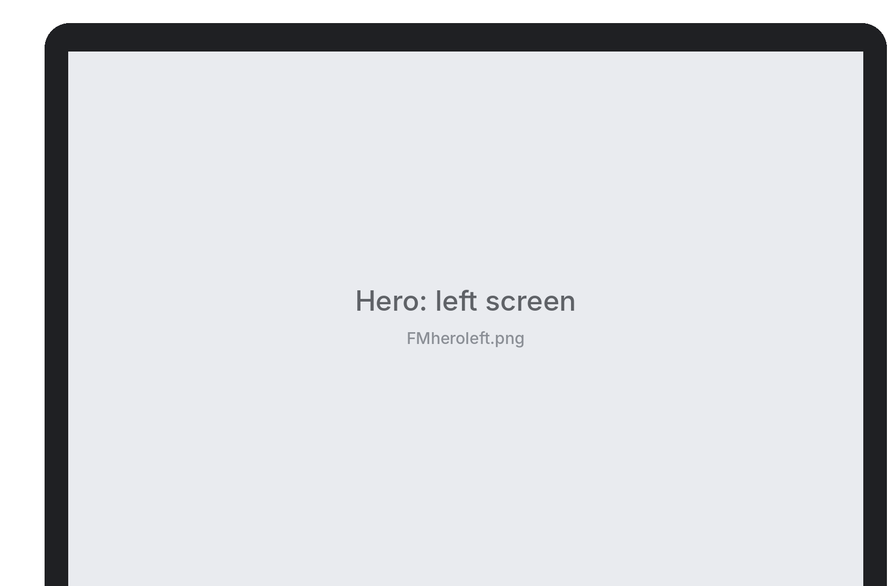
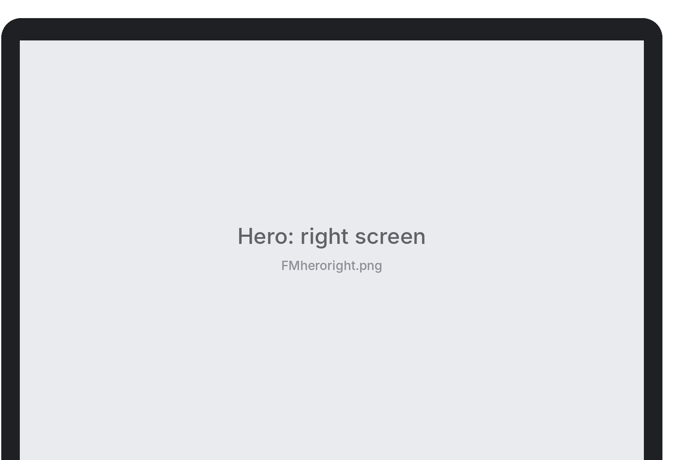
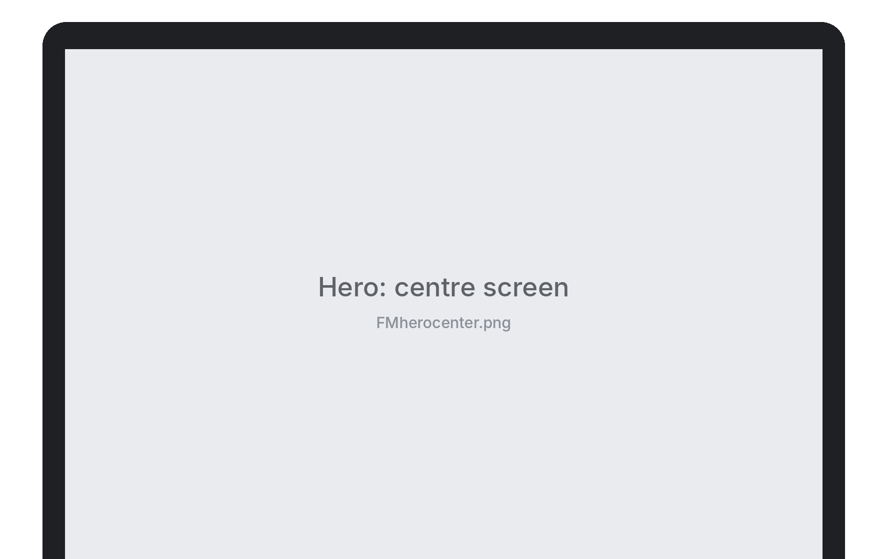

Template sprawl
Templates multiplied with every payment type, concession and class, leaving administrators with versions of versions to manage.



By matching the data design of an institute management system to how school administrators actually work, so creating, updating and applying fee templatesA reusable set of fees and amounts that a school applies when charging its students. stopped being overwhelming.
The fee management module made everyday tasks, like creating, updating and applying fee templates, overwhelming for the school administrators who did them.
Templates multiplied with every payment type, concession and class, leaving administrators with versions of versions to manage.
A change to one key piece of fee data meant finding and editing every template it appeared in, by hand.
We needed to see the real path administrators took, from creating a fee template to charging a class.
Mapping the current design and its user flows showed long, repeated steps: every template was built field by field, then applied to each class separately.
The steps alone didn’t explain the effort. We had to find what was forcing administrators to repeat them.
After talking to the schools’ administration and evaluating the current design ecosystem, we found a mismatch: the data design routed every fee through a class, while administrators think in terms of students.
Administrators had to create more versions of every template as more payment types and concessions were needed.
Payment types such as partial or lump sum are set up once and paired with any template, instead of being built into new versions of it.
Administrators managed separate copies of the same template for as many classes as shared that fee structure.
One template now reaches students directly, so every class with the same fee structure shares it.
Whenever a key piece of fee data changed, administrators had to edit and update all the templates that used it.
With one template per fee structure, a change is made in one place and reaches every student it applies to.
Matching the data design to how schools actually work reduced the effort of managing fees and elevated the experience for the administrators who use it.
One template per fee structure, instead of a copy for every class, payment type and concession.
Creating a template and applying it to students takes fewer steps than before.
Updating key fee data no longer means hunting down and editing every template by hand.